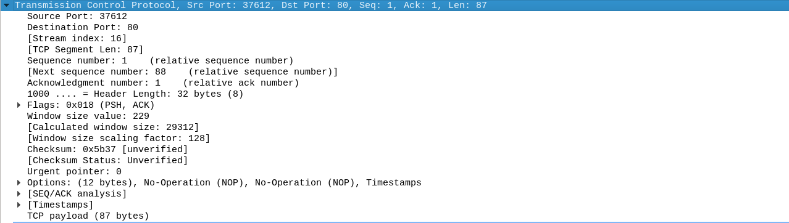
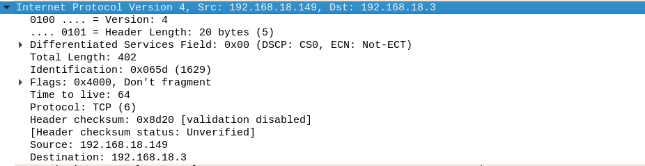

¿Que es Docker?
Docker es un Subsistema de virtual ización que comparte con el anfritión el Kernel y el sistema de archivos .El anfitrión siempre es un sistema Linux. Si estamos en Windows o Mac, necestaré u na maquina virtualizada con VirtualBox o similar.
Un software de máquinas virtuales necesita instalar el sistema operativo completo. Ejemplos de sistemas de virtualización.
- ◼ VirtualBox
- ◼ Hyper-V (Windows)
- ◼ Parallels (MAC)
- ◼ VMWare (Multiples plataformas)
- ◼ QEMU (Linux)
- ◼ XEN (Linux/UNIX)
- ◼ KVM (Linux/UNIX)
Un software de contenedores es un sistema de virtualización que comparte el Kernel con el anfitrión. Se basa en el concepto de microservicio, donde tengo todos los programas instalados, configurados y funcionando, gracias a los contenedores. Ejemplo se software de contenedores.
- ◼ LXD (Linux)
- ◼ Docker
- ◼ Kubernetes

Para saber mas sobre el Tema:
Dockerfiles, ¿Que son?
Un dockerfile es una receta para crear u na imagen para una de aplicación particula r de Docker. De este modo podemos tomar una i magen base, instalarle programas, configurar e sos programas y dejarla preparada para crear con tenedores a partir de ella
Ejemplo Dockerfile
- # use phusion/baseimage as base image.
- from Ubuntu:latest
- # use baseimage-docker's init system.
- cmd ["/sbin/my_init"]
- # install prerequisites
- run apt-get update; \
- apt-get install -y udhcpd
- # set up start up scripts
- run mkdir /etc/service/udhcpd
- add udhcpd.sh /etc/service/udhcpd/run
- run chmod +x /etc/service/udhcpd/run
- # clean up apt when done.
- run apt-get clean && rm -rf /var/lib/apt/lists/* /tmp/* /var/tmp/*
- # expose the port
- expose 67
- expose 67/udp
- expose 68
- expose 68/udp
- # volumes
- volume /data
Comando from: Buscas la imagen mas reciente de ubuntu con ubuntu:latest
Comando run: Ejecutas y añades scrip para actualizar el sistema e instalar udhcp
Comando expose: Abres los puertos 67 y 68
Comando volume: Comparte una carpeta entre el contenedor de docker y el host
¿Que es el SSH?
SSH o Secure Shell, es un protocolo d e administración remota que le permite a los usuarios controlar y modificar s us servidores remotos a través de Inter net a través de un mecanismo de autenticación.
Proporciona un mecanismo para autenticar un usuario rem oto, transferir entradas desde el c liente al host y retransmitir la salid a de vuelta al cliente. El servicio se creó como un reemplazo seguro para el Telnet sin cifrar y utiliza técnicas criptográficas par a garantizar que todas las comunicaciones hac ia y desde el servidor remoto sucedan de manera encriptada.
Instalamos el servidor SSH en Linux y comprobamos que se escucha el puerto 22.
sudo nmap -sU --top-ports 1000 scanme.nmap.org

Crear dos usuarios denominados usuario1 y usuario2.
ssudo useradd -m -d /home/alumno1 alumno1 -s /bin/bash

Cambiar de puerto del servidor e intentar acceder de nuevo
Port 2222
Cambiar configuracion del servidor para acceder con el usr1 y no con el usr2
AllowUsers alumno2 , DenyUsers alumno2

Intentamos acceder
ssh alumno2@192.168.18.210

Cambiamos la configuracion para que solo pueda acceder una Ip determinada
AllowIP 192.168.18.247

Buscamos el paquete del SSH dentro de WireShark y comprobaremos que esta encriptado
Efectivamente, está Encriptado
¿Que es el FTP?
El Protocolo de transferencia de archivos (en inglés F ile Transfer Protocol o FTP) es un protocolo de red para la transferencia de archivos entre sistemas conectados a una r ed TCP (Transmission Control Protocol), basado en la arquite ctura cliente-servidor.
Desde un equipo cliente se puede conectar a un servidor para descargar archivos desde él o para enviarle archivos, independientemente del sistema operativo utilizado en cada equipo. El servicio FTP es ofrecido por la capa de aplicación del modelo de capas de red TCP/IP al usuario, utilizando normalmente el puert o de red 20 y el 21
En esta guia vamos a configurar un servidor FTP
Habilitamos el modo Anonimo
anonymous_enable=yes

Habilitamos las opciones para usuarios del Sistema y para que pueda descargar y subir
local_enable=YES
write_enable=YES
Habilitamos el modo pasivo
passive

Habilita los logs
xferlog_file=/far/log/vsftpd.log

Screenshoot logs
Screenshoot here

Cambios el mensaje de bienvenida
Screenshoot here

Abrimos WireShark y comprobamos que esta funcionando en modo pasivo
Screenshoot here

Pantallazo Acceso modo grafico
Screenshoot here

¿Que es Telnet?
Telnet es una herramienta que ha sido utilizada durante décadas por los administr adores de sistema informáticos en el ámbito de l as redes. Las conexiones remotas no son algo precis amente nuevo, ya desde las primeras redes y con sistem as sin escritorio se utilizaban herramientas como Telnet para conectarnos a servidores y equipos conectados a una red, tanto de forma remota como interna
Instalamos Telnet mediante el siguiente comando
sudo apt install telnetd

Despues ejecutamos el siguiente comando para iniciar el servidor Telnet
sudo /etc/init.d/openbsd-inetd restart

Comprobamos que el servicio de Telnet esta funcionando con un
snmap localhost
Cuando lo tengamos ejecutado nos conoectaremos con el comando (192.168.18.210 es la Ip de la Raspberry)
telnet 192.168.18.210

Ejecutamos algunos comandos desde Telnet y vamos al wireshark a analizar trafico
Buscamos el paquete y hacemos Click en Follow TCP Stream (Podemos ver que no va encriptado)

¿Que es HTTP?
El Protocolo de tran sferencia de hipertexto (en i nglés, Hypertext Transfer Protoc ol, abreviado HTTP) es el protocol o de comunicación que permite las tra nsferencias de información en la World Wide Web
Realizamos una peticion web y abrimos wireshark
Protocolos usados
Transporte = TCP
Enlance = Ethernet 2
Red = IPv4
Puertos implicados en la capa de transporte
Estan implicados los siguientes puertos
Puerto Origen : 37612
Puerto Origen : 80
Payload es de unos 87 bytes
Direccions IP Implicadas en esta peticion
Ip Origen : 192.168.18.149 → Pertenece a mi equipo
Ip Destino : 192.168.18.3 → Pertenece a Cisco
El Payload es 402 – 20 = 382 bytes
Direcciones MAC Implicadas en esta peticion
Destino → MAC de Cisco
Origen → MAC de mi Equipo
Payloads
Ipv4 382 bytes
TCP 1046 bytes
TCP 1046 bytes

Protocolo usado
HTTP 1.1

Acuerdo en tres bandas entre cliente y servidor
Los 3 primeros paquetes TCP de esta captura son el acuerdo en tres bandas entre cliente y servidor. Se envían paquetes 3 paquetes entre el servidor y el cliente para ponerse de acuerdo y luego se empiezan a enviar los datos.

REDES SOCIALES